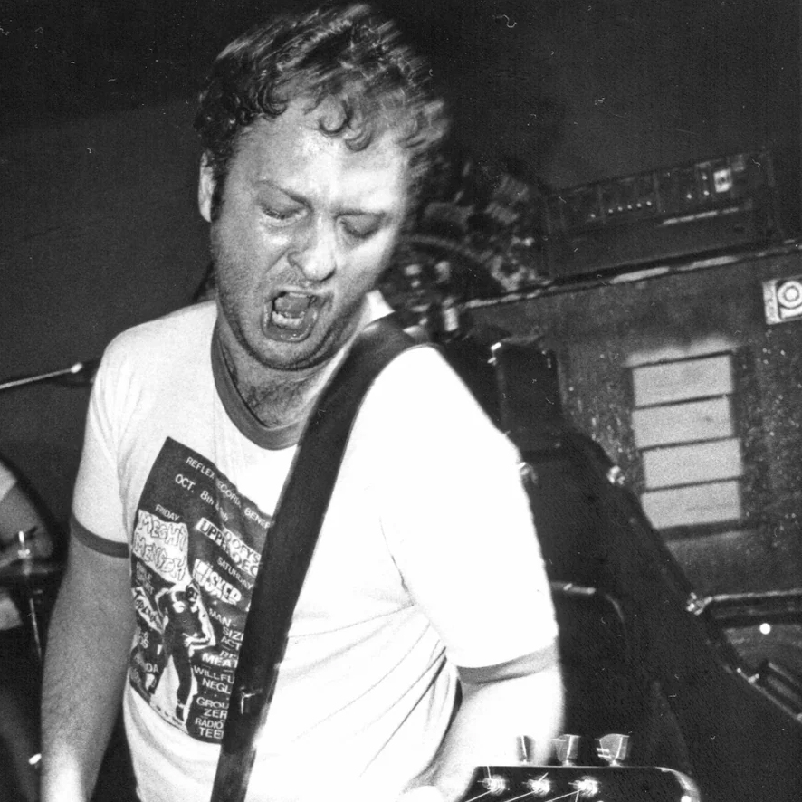
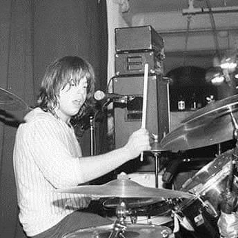
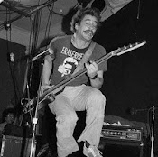

The Hüsker Dü Story
From their formation in Saint Paul, Minnesota in 1979 to their breakup in 1987, Hüsker Dü transformed from hardcore punk pioneers into one of the most influential alternative rock bands of the 1980s.
Band Members

Bob Mould
Guitar and Vocals
Primary songwriter behind the evolution from hardcore to melodic rock. Formed Sugar after breakup and maintains active solo career.

Grant Hart
Drums and Vocals
Melodic sensibilities provided crucial balance to Mould's intensity. Formed Nova Mob, continued music until 2017 death.

Greg Norton
Bass Guitar
Rhythmic foundation and stabilizing force. Known for distinctive handlebar mustache. Retired from music, works as chef.
Timeline
Formation & Early Years (1979-1982)
Bob Mould, Grant Hart, and Greg Norton came together in the Minneapolis punk scene, initially playing covers before developing their own blistering hardcore sound.
Creative Peak (1983-1985)
WThe band's most productive period saw the release of 'Zen Arcade,' an ambitious double- album that proved punk could be both experimental and emotionally complex.
Major Label Era & Breakup (1986-1987)
Their move to Warner Bros. Records brought wider exposure but also internal tensions that ultimately led to the band's dissolution in 1987.